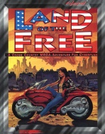

|  | Fiche technique |
| Scénario pour le jeu de rôles Cyberpunk 2020, édité par R. Talsorian Games (1994) | |
| Langue | Anglais |
| Thème | Transamerica |
| Qualité du background | 4 / 5 |
| Qualité des scénarii | 4 / 5 |
| Qualité des règles | - |
| Qualité des illustrations | 2 / 5 |
| Qualité de l'écriture | 3 / 5 |
Ce scénario classieux ne se trouve rien de moins que dans une grosse boîte, qui nous ramène au temps de nos premiers JDR. L'oeil ému, après avoir ouvert la boîte, on trouve un épais livret contenant la campagne dans son intégralité, des feuilles d'indices (coupure de presse, documents, etc), des cartes de visite (celles des PNJs), une grande carte des USA, et des feuilles représentant divers véhicules, afin de simuler les scènes d'action. Le contenu est luxueux, et la campagne que l'on nous propose est un voyage à travers les USA, ce qui rend le supplément Home of the Brave quasiment indispensable pour jouer. Le scénario débutant par une extraction est plutôt classique et linéaire, mais permet de faire voyager les joueurs, et de changer un peu de la routine de Night City. En somme, une campagne honnête, où l'on apprendra au passage que les PNJ ont des niveaux (comme à AD&D)... Plutôt positif malgré ça.
{kind=link}